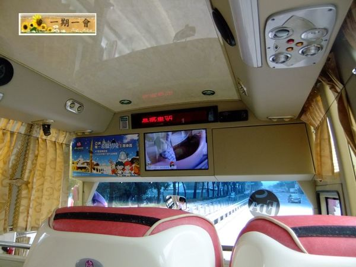
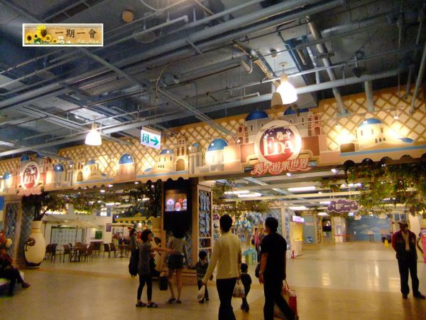

高雄義大世界怎麼去?
高雄義大世界怎麼去
義大這個新的遊樂景點是在過年期間才開始關注的，從新聞中看到誇張的前往義大車潮令人印象深刻，本來是要去日本的結果因為地震幅射問題而取消，最終決定前往這個令人好奇的義大世界~*

我們沒有開車是選擇大眾交通工具，先搭高鐵到左營站下車，從第五月台出口轉搭義大客運前往義大世界。從高鐵左營站到義大約30分鐘票價為30元
p.s.臺鐵新左營站是為了配合，高鐵、捷運三鐵相互轉乘而興建的4層樓，也就是說台鐵新左營站的入口，其實也是高鐵左營站的後門喔，所以對沒有車的人來說交通是很便利的!
一路上播放著義大的資訊， 還有可愛的小動畫 讓人消磨時間^^ 接駁車的最後一站就是義大世界了。
 義大遊樂世界的入口位於義大世界購物廣場的二樓， 在購票處那裏有個置物櫃可以寄放隨身行李， 一次10塊錢 為一般大小的置物櫃， 所以如果是帶用拖的行李箱是放不進去的喔!

現場購買義大遊樂世界的票門為800元， 有贈送拍照兌換卷一張及遊戲免費體驗卷二張， 記得要去拍照換免費相片鑰匙圈喔! 可別像我一樣誤以為是拍照免費要鑰匙圈要錢… p.s.有當月星座優惠但我跟朋友都不是… 有興趣的朋友請上官網查詢看這個活動是否截止瞜~
其他如何去義大的方式&接駁車時刻表就請看義大的官網吧~